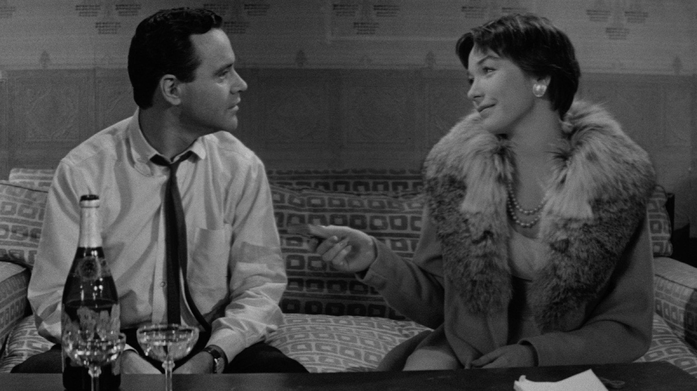
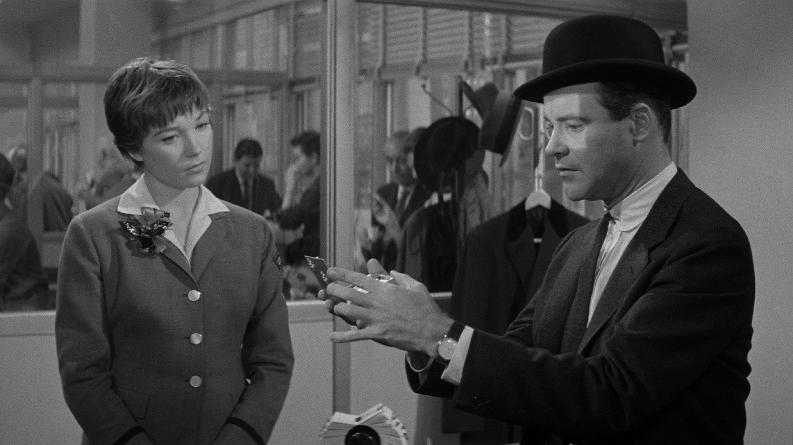

L'appartamento (1960), la commedia d'ufficio senza età
Cinque Oscar, un budget di 3 milioni e una commedia sul lavoro che fa ancora un po' male: il film di Billy Wilder, rivisto con occhi nuovi
Nel 1960 un film in bianco e nero, costato 3 milioni di dollari, ne incassò circa 24,6 e divenne l'ottavo titolo più visto dell'anno negli Stati Uniti. Eppure non era un'avventura né un musical, ma una commedia su un impiegato che presta il proprio alloggio ai dirigenti della compagnia per i loro incontri extraconiugali, perché spera in una promozione. Rivedendo L'appartamento (The Apartment) ci siamo quindi chiesti se una storia così, con regole sociali di sessant'anni fa, parli ancora a chi lavora adesso.
Da dove viene l'idea
Billy Wilder diresse e produsse il film, e lo scrisse insieme a I.A.L. Diamond. Il punto di partenza fu doppio. Da una parte c'era Breve incontro di Noël Coward, dove una casa prestata diventa il luogo di un amore, dall'altra uno scandalo hollywoodiano che coinvolse l'agente Jennings Lang. Questa origine dice molto sul tono, perché tiene insieme la delicatezza di una storia sentimentale e una cronaca piuttosto sporca.
Anche il cast ebbe un cambio di rotta. Per la parte del dirigente Sheldrake era previsto Paul Douglas, ma dopo la sua morte il ruolo passò a Fred MacMurray, e per noi è una scelta che funziona. Jack Lemmon è l'impiegato Baxter, mentre Shirley MacLaine è Fran Kubelik.

Un ufficio che sembra senza fine
La parte che ci pare più moderna è visiva. Lo scenografo Alexandre Trauner costruì l'ufficio assicurativo con la prospettiva forzata, così le file di scrivanie si allontanano fino a restringersi, come se i dipendenti fossero pezzi di una catena. La casa di Baxter, invece, fu arredata con oggetti da rigattiere, e si vede, perché è un posto in cui nessuno resta: è sempre occupato da altri.
Questo contrasto è il vero argomento del film, più della storia d'amore. Baxter ha un ufficio enorme ma una casa che non è sua, mentre Fran ha un lavoro in cui i superiori la guardano senza vederla. Quando i due si parlano, in poche scene sul divano o al tavolo, Wilder smette di fare lo spiritoso e lascia recitare. Lemmon fa ridere e intanto lascia intendere la fatica di chi non sa dire di no, però è MacLaine che, con una sola occhiata, mette in dubbio ogni scena precedente.
Il film che divise i critici
L'accoglienza del 1960 non fu quella che ci immaginiamo per un classico, perché le recensioni iniziali furono miste. Sul New York Times Bosley Crowther lo trovò «gleeful, tender» e perfino sentimentale, invece Hollis Alpert sulla Saturday Review lo definì «a dirty fairy tale», una sporca favola. La storia poi diede ragione ai primi. Alla cerimonia del 1961 il film vinse cinque Oscar, tra cui miglior film e miglior regia. Shirley MacLaine ottenne anche la Coppa Volpi a Venezia, e i due protagonisti vinsero il Golden Globe.
Nel tempo la considerazione è cresciuta in modo costante. Nel 1994 il film entrò nel National Film Registry degli Stati Uniti, e nel sondaggio Sight & Sound del 2002 tra i registi arrivò quattordicesimo. Roger Ebert gli diede quattro stelle nel 2001 e lo inserì nei suoi Great Movies. A ottobre 2026 Rotten Tomatoes conta il 93% di recensioni positive, mentre Metacritic gli dà 94 su 100. Dal film nacque perfino un musical di Broadway, Promises, Promises, nel 1968, con musiche di Burt Bacharach.
Come regge dopo più di sessant'anni
Oggi ci sono due modi di vedere L'appartamento, e li dichiariamo come posizione nostra. Il primo è quello di una commedia perfetta, con battute che arrivano al momento giusto e attori che sanno quando fermarsi. Il secondo è più scomodo, perché mostra con esattezza un ricatto morbido: nessuno costringe Baxter, ma tutti gli fanno capire che il suo futuro dipende dalla disponibilità. Quel meccanismo non è invecchiato, quindi il film continua a far ridere e a mettere a disagio nella stessa scena.
Il limite, per noi, è la gentilezza con cui Wilder sistema le cose verso la fine. Senza rivelare nulla, il film sceglie di consolare più di quanto la sua parte migliore permetterebbe, perché i personaggi più opachi ricevono meno conseguenze di quante ne avrebbero in un racconto più severo. Non lo rovina, però lo rende un po' più rassicurante di quanto la sua prima ora lasci sperare. È una scelta di epoca e di pubblico, e capiamo allora perché oggi qualcuno la senta come una concessione.
Resta il fatto che pochissime commedie sul lavoro hanno saputo unire il realismo del corridoio e dell'ascensore alla grazia di una storia a due. Per questo il film continua a comparire nelle liste dei più amati, e per questo, quando una serie parla di carriere e di favori, si finisce quasi sempre a pensare a Baxter.
Dove vederlo e a chi lo consigliamo
In Italia il film uscì il 6 ottobre 1960 e nel 2018 tornò al cinema in versione restaurata. A ottobre 2026 si trova in abbonamento su MUBI, anche attraverso gli Amazon Channel, oppure a noleggio su Apple TV Store o Rakuten TV, ma anche su Amazon Video o CHILI. Le piattaforme cambiano spesso catalogo, quindi conviene controllare prima di organizzare la serata.
Lo consigliamo a chi cerca una commedia per adulti e a chi pensa che il cinema classico sia lento, ma soprattutto a chi lavora in un ufficio e vuole ritrovarsi senza sentirsi preso in giro. Dura 125 minuti e non pesa. Chi ama le commedie moderne più rapide potrebbe trovare i primi venti minuti un po' prudenti, però basta aspettare la prima scena sul divano per capire dove va a parare.
Domande frequenti
Quando uscì L'appartamento in Italia?
Il 6 ottobre 1960. Negli Stati Uniti era uscito nel giugno dello stesso anno.
Quanti Oscar vinse The Apartment?
Cinque, alla cerimonia del 1961: miglior film e miglior regia, poi sceneggiatura originale e scenografia, oltre al montaggio.
Dove si può vedere in Italia?
A ottobre 2026 in abbonamento su MUBI (anche tramite Amazon Channel), oppure a noleggio su Apple TV Store o Rakuten TV, ma anche su Amazon Video o CHILI.